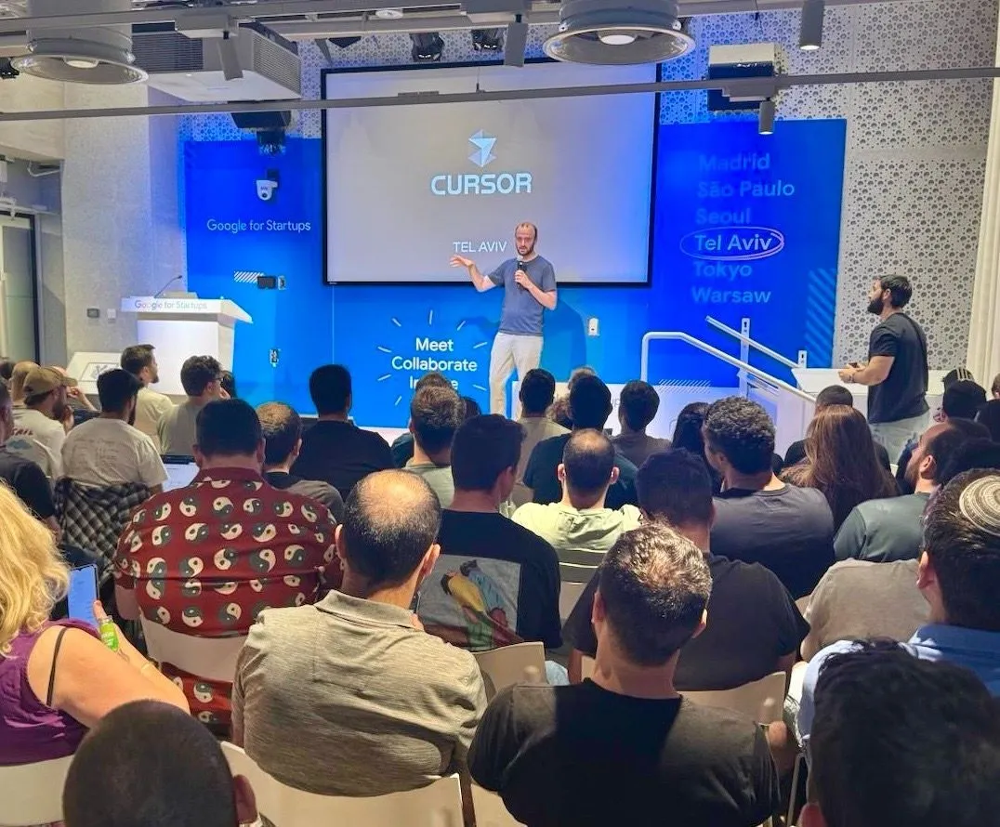

Eliezer Steinbock built Inbox Zero without funding
Originally posted on LinkedIn, June 9, 2025.
Eliezer Steinbock built Inbox Zero by himself, without raising money or chasing press coverage. It is an AI system that scans and organizes your inbox, categorizing newsletters, marketing messages, and emails that need a reply. It also drafts responses, filters spam, and summarizes messages.
These are not empty claims. The product does all of this remarkably well, and more than 8000 users have signed up within 3 months of launch.
The code is also open source. Anyone with the technical knowledge can inspect it, which adds confidence in the project without stopping customers from paying for Eliezer’s managed cloud service.
Eliezer built the entire project with Cursor IDE. He shares how he works through YouTube videos and other channels, founded the Cursor Israel community, and runs meetups about the tool. The knowledge he shares also made him an official Cursor ambassador in Israel.
Before Inbox Zero, he built other ventures, including skilled, a marketplace for freelancers in Israel, and a fantasy football game. He bootstrapped all of them without raising funding.
Inbox Zero was accepted into TinySeed, a specialized accelerator that works only with bootstrapped companies. The project also sits at the top of GitHub’s ranking of TypeScript-based projects and inspires developers around the world.
Solo founders who bootstrap their companies receive less attention and media coverage. That is a shame. Builders like Eliezer, the tool he created, and the knowledge he shares deserve to be recognized.
